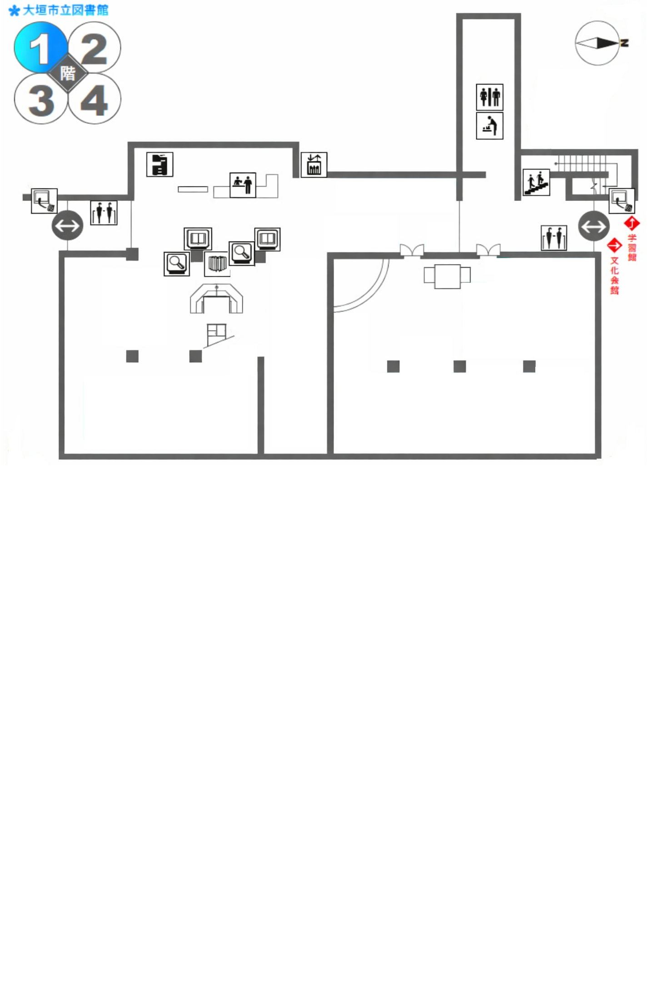

お探しの本の分野を選択してください
選択してください
【 雑 誌 】 週刊誌・情報誌
【 生活情報 】 旅行ガイド
【 生活情報 】 健康・病気・ダイエット
【 生活情報 】 園芸・ガーデニング・家庭菜園
【 生活情報 】 華道・茶道・囲碁・将棋
【 家族応援 】 料理・レシピ本
【 家族応援 】 裁縫・服飾・美容
【 家族応援 】 家事・育児
【 児童室 】 児童書・絵本・紙芝居
【 ＹＡコーナー 】 進路・ライトノベル
【 ビジネス 】パソコン・政治経済・お金
【 一 般 】 小説・文庫本
【 一 般 】 哲学・心理学・占い
【 一 般 】 歴史・伝記
【 一 般 】 年金・相続・社会問題
【 一 般 】 社会・科学
【 一 般 】 技術・産業
【 一 般 】 芸術
【 一 般 】 スポーツ
【 一 般 】 文学・小説
スマホで見る
